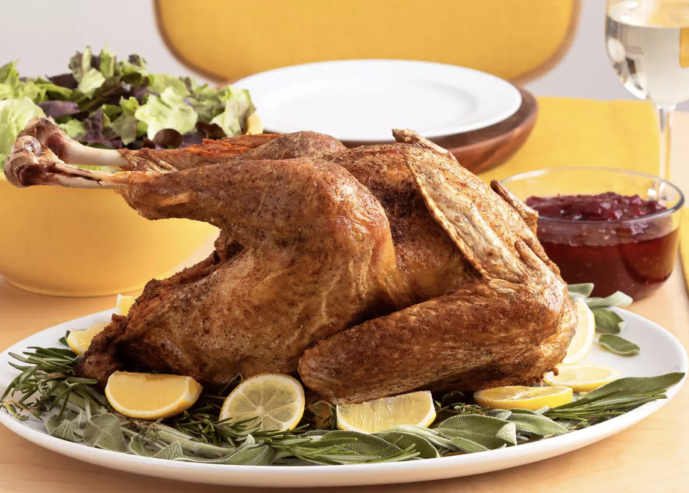

Simple Deep Fried Turkey

Description
Learn to deep fry a turkey.
Ingredients
- Peanut oil
- Turkey
- Seasonings
Steps
- Heat oil in a large stockpot to 350 degrees F.
- Make sure turkey is thawed. Pat dry. Place in basket.
- Lower basket into stockpot slowly. Cook turkey for 3.5 minutes per pound.
- Remove turkey from stockpot. Rest for 15 min.